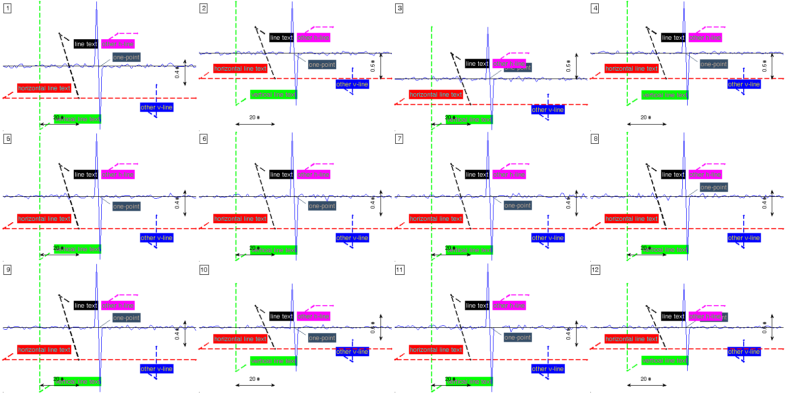

Plotting signal mosaics¶
Low level function to produce mosaic charts of signals and annotations. This function plots several subplots in the same figure in order to do a mosaic with the different leads available in ECG. Annotations can be provided individually or for all the mosaics.
Prototype¶
The function prototype is the following.
[ ECG_hdl axes_hdl fig_hdl all_yranges ] = plot_ecg_mosaic( ECG, varargin )
This function accepts as arguments the arg_name/arg_val method described below.
Arguments¶
ECG: [numeric or cell] REQUIRED
[numeric]: signal matrix of dimension
[sig_length sig_size repetitions_size]where:- sig_length: time length in samples
- sig_size: number of ECG leads or number of signals.
- repetitions_size: number of repetitions of the same signals. Typically used when time-synchronized events, like heartbeats.
[cell]: cell array of length repetitions_size, where each cell is (probably a time alligned event) a signal of dimension
[sig_length sig_size]
QRS_locations: [numeric] OPTIONAL. Synchronization sample. In ECG context, this values are the QRS fiducial point.
[] (default)WinSize: [numeric] OPTIONAL. Width of the window around each fiducial point provided in QRS_locations.
[] (default)ECG_header: [struct] OPTIONAL. Description of the ECG typically available in the ECG_header as described here.
MaxECGrange: [numeric or string] OPTIONAL. Force a vertial range in order to ease visual comparison of signals in the mosaic.
[string]
- ‘max’: force the maximum range to be the range
for all mosaics.
‘min’, ‘mean’, ‘median’: are also available options.
‘none’: Each mosaic with a different range. (Default).
RowsCols: [numeric] OPTIONAL. Number of rows and columns of the mosaic. If ommited or if
rows * cols ~= ECG_header.nsig, these values are automatically adapted to the best fit mosaic in relation to the aspect ratio of the screen.FigureHdl: [figure handle] OPTIONAL. Choose the figure to be produced the mosaic.
gcf (default)ECG_delineation: [struct] OPTIONAL. Annotation struct described here.
ECG_annotations: [cell] OPTIONAL. Annotations to be included in the mosaic. The function accepts 2 type of annotations: points and lines. An example below shows how to define both annotations.
Output:
- ECG_hdl: handle to the plotted signals.
- axes_hdl: handle to the axes.
- fig_hdl: handle to fig.
- all_yranges: vertical ranges of the plotted signals.
Example¶
The following example shows some typical use of the function
win_size = 100;
sig_samp = 10000;
sig_size = 12;
event_size = 50;
x = 0.1*randn(sig_samp,sig_size);
event_locations = randsample(win_size:sig_samp-win_size, event_size);
x(event_locations-1,:) = x(event_locations-1,:) + 1;
x(event_locations+1,:) = x(event_locations+1,:) - 1;
x_packed = pack_signal(x, event_locations, win_size);
figure(1)
% estimation of the signal averaged event
plot_ecg_mosaic( mean(x_packed,3) );
Here ,,,

figure(2)
% visualization of all events. In this case previous pack_signal call is
% not needed.
plot_ecg_mosaic(x, 'QRS_locations', event_locations, 'WinSize', win_size);
Here ,,,

figure(3)
% introducing several kind of marks to the plot
h_line = cell(sig_size,7);
h2_line = cell(sig_size,7);
v_line = cell(sig_size,7);
v2_line = cell(sig_size,7);
point = cell(sig_size,7);
a_line = cell(sig_size,7);
h_line(:,1) = {'line'};
h_line(:,2) = { [ { 'String' 'LineStyle' 'LineWidth' 'Color' 'TextColor' }; ...
{ 'horizontal line text' '--' 1.5 'r' 'r' } ]'};
h_line(1:sig_size, [6 7]) = num2cell( repmat(-0.5,sig_size,2) );
h2_line(:,1) = {'line'};
h2_line(:,2) = { [ { 'String' 'LineStyle' 'LineWidth' 'Color' 'TextColor' }; ...
{ 'other h-line' '--' 1.5 'm' 'm' } ]'};
h2_line(1:sig_size, 4:7) = num2cell( [ repmat(60,sig_size,1) repmat(70,sig_size,1) repmat(0.5,sig_size,2) ] );
v_line(:,1) = {'line'};
v_line(:,2) = { [ { 'String' 'LineStyle' 'LineWidth' 'Color' 'TextColor' }; ...
{ 'vertical line text' '--' 1.5 'g' 'g' } ]'};
v_line(1:sig_size, [4 5]) = num2cell( repmat(20,sig_size,2) );
v2_line(:,1) = {'line'};
v2_line(:,2) = { [ { 'String' 'LineStyle' 'LineWidth' 'Color' 'TextColor' }; ...
{ 'other v-line' '--' 1.5 'b' 'b' } ]'};
v2_line(1:sig_size, 4:7) = num2cell( [ repmat(80,sig_size,2) repmat(-0.8,sig_size,1) repmat(-0.3,sig_size,1) ] );
point(:,1) = {'point'};
point(:,2) = { [ { 'String' 'Color' 'TextColor' }; ...
{ 'one-point' [0.2 0.3 0.4] [0.2 0.3 0.4] } ]'};
point(1:sig_size,4) = num2cell( repmat(50,sig_size,1) );
a_line(:,1) = {'line'};
a_line(:,2) = { [ { 'String' 'LineStyle' 'LineWidth' 'Color' 'TextColor' }; ...
{ 'line text' '--' 1.5 'k' 'k' } ]'};
a_line(1:sig_size,4:7) = num2cell( [ repmat(30,sig_size,1) repmat(40,sig_size,1) repmat(0.5,sig_size,1) repmat(-0.5,sig_size,1) ] );
aux_anns = cat(3,h_line,v_line,h2_line,v2_line,point,a_line);
plot_ecg_mosaic(mean(x_packed,3), 'ECG_annotations', aux_anns );
Here ,,,
